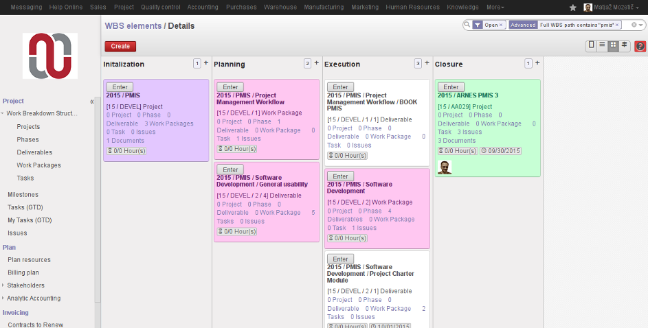
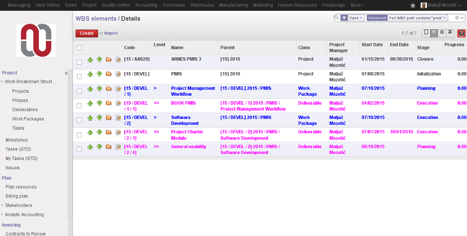
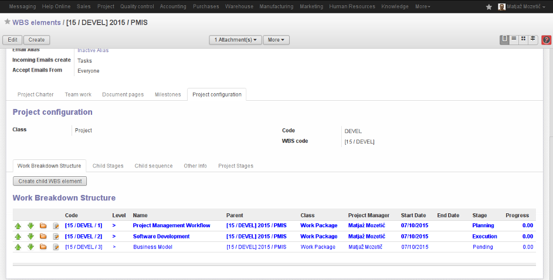

Eficent brings you this module to better manage your projects.
A work breakdown structure (WBS), in project management and systems engineering, is a deliverable oriented decomposition of a project into smaller components.
A work breakdown structure element may be a product, data, service, or any combination thereof. A WBS also provides the necessary framework for detailed cost estimating and control along with providing guidance for schedule development and control.
Once you start creating a project, you should be decomposing it into smaller, more manageable components, that you can classify as project, phase, deliverable or work package. The hierarchy of the project is considered the Work Breakdown Structure and the individual projects are considered WBS components.
When you define a new project you should enter the name of the WBS component and the code. Then you should indicate the parent WBS component in the tab "Other info". The complete WBS name of the path and complete WBS code of the path to that component will be calculated and shown.
You have full visibility of the whole WBS hierarchy at all times in the Kanban, Tree and Form views.
You can quickly display the whole WBS hierarchy if you search by "Complete WBS Code" or "Complete WBS Name" and indicate the parent WBS Component code or name.
In the Form view a tab "WBS Components" will display the inmediate lower level components of the current project.
Kanban View:
Tree View:
Form View:
If you are interested in this module and seek further assistance to use it please visit us at www.eficent.com or conact us at contact@eficent.com.